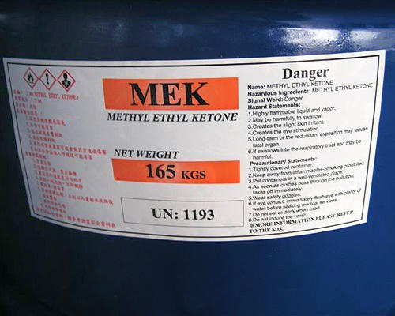
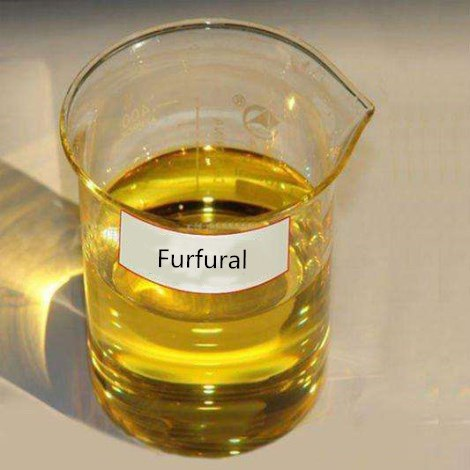
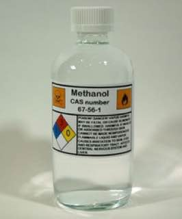
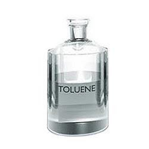
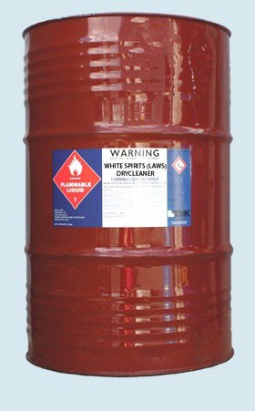
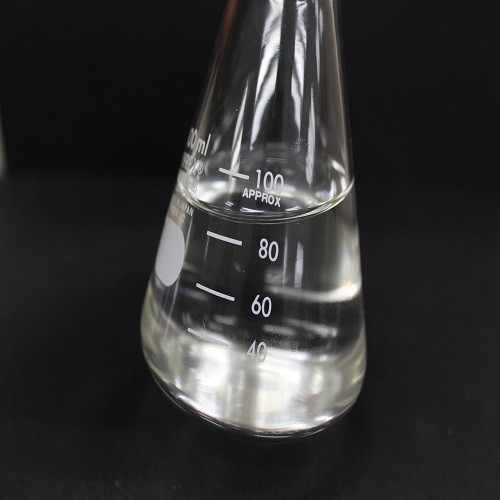
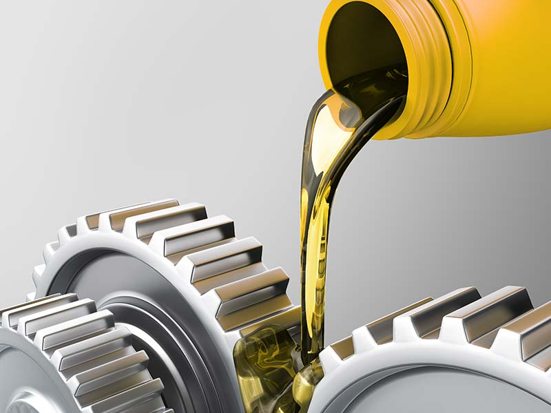

Furfural
Furfural is an aldehyde of furan and is a yellow oily liquid in pure form, but tends to turn brown upon prolonged exposure to air and moisture ...
Methanol
Methanol (CH3OH), also called methyl alcohol, wood alcohol, or wood spirit, the simplest of a long series of organic compounds called ...
Toluene
Toluene, or methyl benzene, is a clear, flammable, water-insoluble liquid with the odor of paint thinner. It can be found naturally in petroleum crude oil. ...
White Spirits
White spirit also known as solvent naphtha, mineral spirit, varsol and mineral turpentine is a specialty refined product in the naphtha boiling range. ...
White Oils
White oils are highly refined mineral oils that are extremely pure, stable, colorless, odorless, non-toxic and chemically inert. These attributes make ...